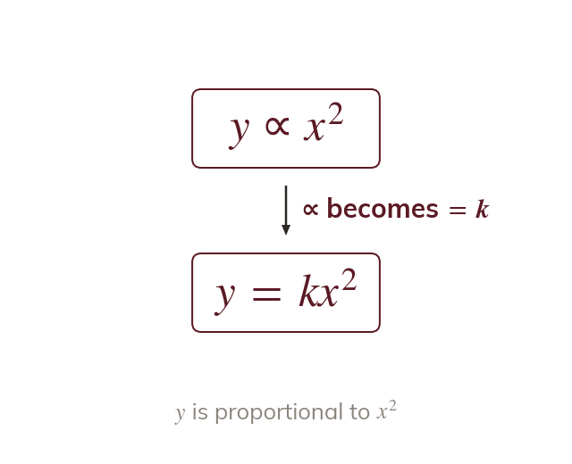
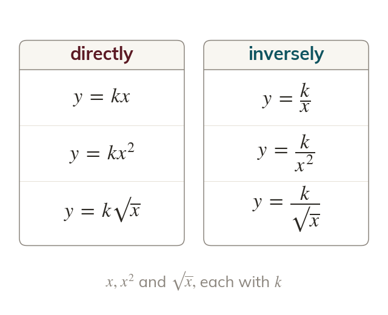
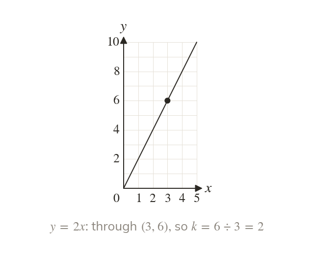
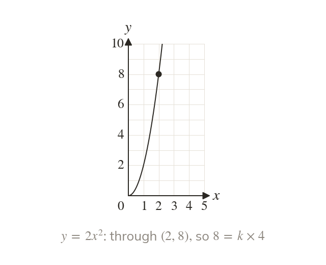
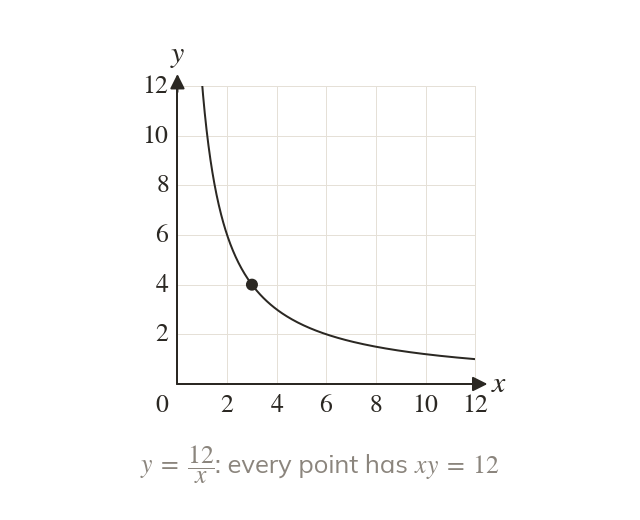
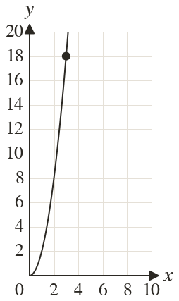
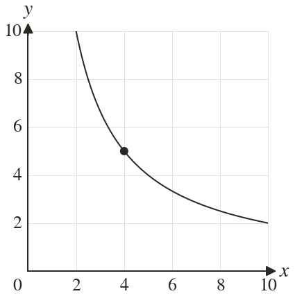

From words to a formula
The symbol ∝ means 'is proportional to'. Replacing it with turns the statement into a formula.
Science writes proportion as formulas: a car's stopping distance grows with the square of its speed. A statement in words becomes a formula, and each formula has its own graph.
Work down the page at your own pace. Write every answer in your book first, then click to check it.
Read each card, then follow the worked examples one step at a time.

The symbol ∝ means 'is proportional to'. Replacing it with turns the statement into a formula.

Inversely proportional puts the quantity under k. Any power or root stays with its letter.
Pick an answer. If it's wrong, the feedback tells you which mistake it was.
Read each card, then follow the worked examples one step at a time.

The graph of is a straight line through the origin. Its gradient is

The graph of also starts at the origin. It curves upward, getting steeper.

The graph of falls, then flattens. It never meets either axis.


Pick an answer. If it's wrong, the feedback tells you which mistake it was.
Printable worksheet — the questions with room to work.


Finished? Next lesson: 10H.19.2 Direct Proportion Formulae.
For each skill, tap the one that is true for you today. Your Revise pages start with anything you mark Not yet.
Your ratings are saved on this device only.
Log in, then search for a code to practise that skill.
Videos, worksheets and more on each part of this lesson.